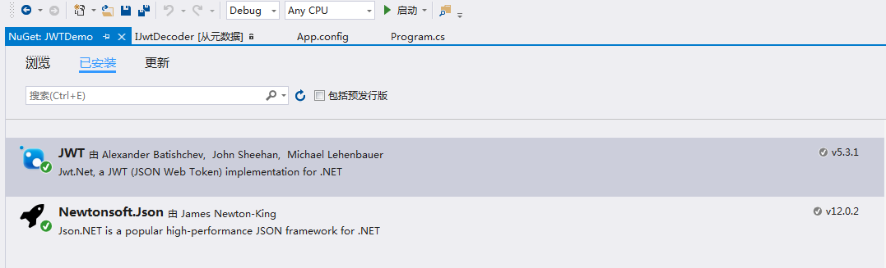
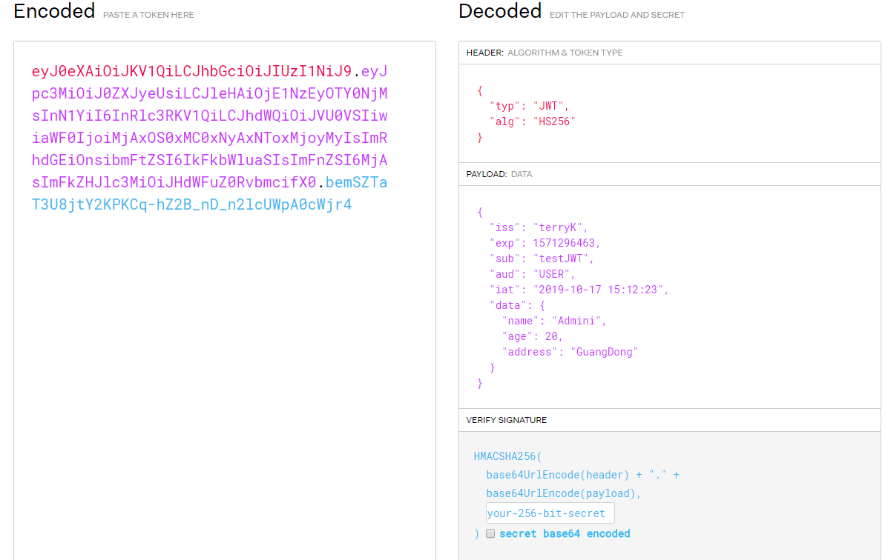

转载自博友（TerryTon）
1、因为json是通用的，所以jwt可以在绝大部分平台可以通用，如java，python，php，.net等
2、基于jwt是无状态的，jwt可以用于分布式等现在比较流行的一些框架中。
3、jwt本身不是加密的，所以安全性不是很高，别人知道了你的token就可以解析了，
当然你自己也可以对jwt进行加密，设置的过期时间不宜过长，同时不要保存一些重要的信息，如密码。
4、尽量使用https，这也是为了安全。
5、JWT字节占用很少，非常的轻便，所以便于传输。
6、JWT一般放在http的头部Header中传输。
直接附上Demo,创建控制台应用程序，添加NuGet包JWT Newtonsoft.Json

JWTDemo
using JWT;
using JWT.Algorithms;
using JWT.Serializers;
using System;
using System.Collections.Generic;
using System.Linq;
using System.Text;
using System.Threading.Tasks;
namespace JWTDemo
{
class Program
{
static void Main(string[] args)
{
//载荷（payload）
var payload = new Dictionary<string, object>{
{ "iss","terryK"},//发行人
{ "exp", DateTimeOffset.UtcNow.AddSeconds(120).ToUnixTimeSeconds() },//到期时间
{ "sub", "testJWT" }, //主题
{ "aud", "USER" }, //用户
{ "iat", DateTime.Now.ToString() }, //发布时间
{ "data" ,new { name="Admini",age=20,address="GuangDong"} }
};
//生成JWT
Console.WriteLine("******************生成JWT*******************");
string JWTString = JwtHelper.CreateJWT(payload);
Console.WriteLine(JWTString);
//校验JWT
Console.WriteLine("*******************校验JWT，获得载荷***************");
string ResultMessage;//需要解析的消息
string Payload;//获取负载
if (JwtHelper.ValidateJWT(JWTString, out Payload, out ResultMessage))
{
Console.WriteLine(Payload);
}
Console.WriteLine(ResultMessage);//验证结果说明
Console.WriteLine("*******************END*************************");
Console.ReadKey();
}
}
class JwtHelper
{
static IJwtAlgorithm algorithm = new HMACSHA256Algorithm();//HMACSHA256加密
static IJsonSerializer serializer = new JsonNetSerializer();//序列化和反序列
static IBase64UrlEncoder urlEncoder = new JwtBase64UrlEncoder();//Base64编解码
static IDateTimeProvider provider = new UtcDateTimeProvider();//UTC时间获取
const string secret = "MIGfMA0GCSqGSIb3DQEBAQUAA4GNADCBiQKBgQC4aKpVo2OHXPwb1R7duLgg";//服务端
public static string CreateJWT(Dictionary<string, object> payload)
{
IJwtEncoder encoder = new JwtEncoder(algorithm, serializer, urlEncoder);
return encoder.Encode(payload, secret);
}
public static bool ValidateJWT(string token, out string payload, out string message)
{
bool isValidted = false;
payload = "";
try
{
IJwtValidator validator = new JwtValidator(serializer, provider);//用于验证JWT的类
IJwtDecoder decoder = new JwtDecoder(serializer, validator, urlEncoder);//用于解析JWT的类
payload = decoder.Decode(token, secret, verify: true);
isValidted = true;
message = "验证成功";
}
catch (TokenExpiredException)//当前时间大于负载过期时间（负荷中的exp），会引发Token过期异常
{
message = "过期了！";
}
catch (SignatureVerificationException)//如果签名不匹配，引发签名验证异常
{
message = "签名错误！";
}
return isValidted;
}
/*
/// <summary>
/// 对header和payload进行base64加密
/// </summary>
/// <param name="extraHeaders"></param>
/// <param name="payload"></param>
/// <param name="key"></param>
/// <returns></returns>
public string Encode(IDictionary<string, object> extraHeaders, object payload, byte[] key)
{
if (payload is null)
throw new ArgumentNullException(nameof(payload));
var segments = new List<string>(3);
var header = extraHeaders is null ? new Dictionary<string, object>(StringComparer.OrdinalIgnoreCase) : new Dictionary<string, object>(extraHeaders, StringComparer.OrdinalIgnoreCase);
header.Add("typ", "JWT");
header.Add("alg", _algorithm.Name);
var headerBytes = GetBytes(_jsonSerializer.Serialize(header));
var payloadBytes = GetBytes(_jsonSerializer.Serialize(payload));
segments.Add(_urlEncoder.Encode(headerBytes));
segments.Add(_urlEncoder.Encode(payloadBytes));
var stringToSign = String.Join(".", segments.ToArray());
var bytesToSign = GetBytes(stringToSign);
var signature = _algorithm.Sign(key, bytesToSign);
segments.Add(_urlEncoder.Encode(signature));
return String.Join(".", segments.ToArray());
}
*/
}
}查看Token
